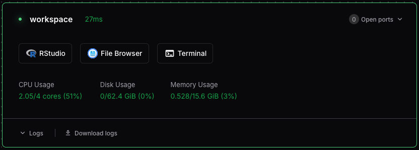

Getting Started with RStudio
RStudio is a powerful integrated development environment (IDE) for R programming. Coder workspaces allow you to run RStudio Server, which provides the full RStudio interface accessible through your web browser.
Creating a Workspace with RStudio
When creating a new workspace, you need to enable the RStudio service to make it available.
RStudio must be enabled when the workspace is created. It can’t be added to an existing workspace.
- Navigate to the “New Workspace” Page
- Complete the required fields
- Make sure “Include RStudio” is set to “Yes”
- Complete the workspace creation process
Once your workspace has booted, you can start RStudio in a new browser window using the button on the workspace dashboard.

Setting Up an RStudio Project
RStudio Projects are used to organize your work and manage working directories. Here’s how to create a new project:
- In RStudio, click File → New Project
- In the New Project Wizard, choose “New Directory”, to create a new directory for your project
- For the project type, select “New Project”
- Enter a name for the new directory:
my-project. Leave “Create project as a subdirectory of” set to~. - Click Create Project
RStudio will create a .Rproj file in your project directory. This file stores project-specific settings and makes it easy to return to your work.
Installing R Packages
You can install packages in your workspace just like a local RStudio installation:
# Install from CRAN
install.packages("tidyverse")
install.packages("ggplot2")
# Install from GitHub
install.packages("devtools")
devtools::install_github("username/repository")Packages installed in your workspace persist across sessions but are isolated from other workspaces. This ensures reproducibility and avoids package conflicts.
Setting Up Git
If you plan to use version control:
- Open the Terminal in RStudio (Tools → Terminal → New Terminal)
- Configure your Git identity:
git config --global user.name "Your Name"
git config --global user.email "your.email@example.com"Additional Resources
Here are some helpful resources to get the most out of RStudio:
- RStudio User Guide - Comprehensive documentation
- RStudio Cheat Sheets - Quick reference guides
- R for Data Science - Learn R programming with RStudio
- Posit Community - Get help and share knowledge